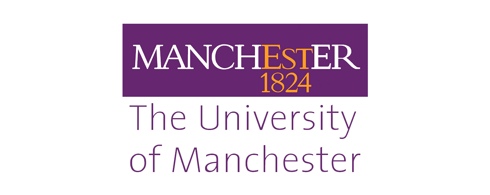

|
Jianing Tian(田佳宁)
Dear professors from PHBS, greetings! Welcome to my personal webpage! I am an undergraduate student studying Journalism and Communication at Nanjing University. My GPA is 4.581 out of 5, ranking 1/19. I have excelled in English language proficiency, achieving a score of 7.5 on the IELTS examination.This is the link to my Selected Works.
|
|
Nanjing University
 09/2020-06/2024(Expected)
- Bachelor of Journalism and Communication (International Journalism)
- Cumulative GPA: 4.581/5 (1/19)
- IELTS Test: 7.5
- Major Courses: International Journalism (99), Media and Society (96), Western Media Studies (96), Advanced Reporting (95), Data Journalism (93.6), Integrated Media Reporting (92.7)
- TA of International Report & Smartphone Story Telling (Teaching language: English)
- President of the S&E Speech and Eloquence Club
University of Stirling
 04/2023-07/2023(Expected)
The University of Manchester
 09/2023-01/2024(Expected)
|
Academic Experience
-
Academic Events
International Academic Exploration in Intelligent Communication and Innovative Social Development at Stanford University Social Media Lab
- Explored cutting-edge areas of intelligent communication such as metaverse, web3.0, and technology for aging, with guidance from professional teams at Tencent Research Institute and Stanford University Social Media Lab.
-
Joining the Violence towards Objects and Interpersonal Interactions: Audience Perception and Interaction with Virtual Idol Bodies research group. And after reading a lot of literature reviews in English, we plan to create a new research on the theme of "virtual celebrity endorsement" on the basis of previous research
-
Social Practices
Survey on the Current Status and Innovative Inheritance of Zhejiang Military Dialect Island
-
Conducted field visits to four dialect island villages in Zhejiang Province for research purposes.
-
Created a project promotional video storyboard, filmed and edited it.
-
Recognized as one of the top ten teams in the university-level social practice program.
|
- the National Scholarship
- the People's Scholarship
- Outstanding Student of Nanjing University for the academic year 2022-2023
- Top 10 Campus Social Practice Team in the Summer of 2022 at Nanjing University
- Bronze medal in the Women's Group B 4x100m Relay at the 61st Nanjing University Athletics Games
- Top 10 Campus Social Practice Team in the Summer of 2022 at Nanjing University
- First prize in the vocal category of the Talent Showcase Competition at Nanjing University's Bingwen Academy
- Second prize in the University Group of the Hangzhou 19th Asian Games China Mobile Cup - Asian Games English Star Contest
- Third prize at the 26th China Daily "21st Century Cup · Coca-Cola Cup" National College English Speech Contest at Nanjing University
-
Third prize in the Deep Reporting category at the 3rd College Campus Media Contest
-
Selected for the second round of the 7th China Data Journalism Contest
|
|
Guitar、Violin、Saxophone、Badminton、Running、Travel、Electronic Music
|
Let's build the world from here
|